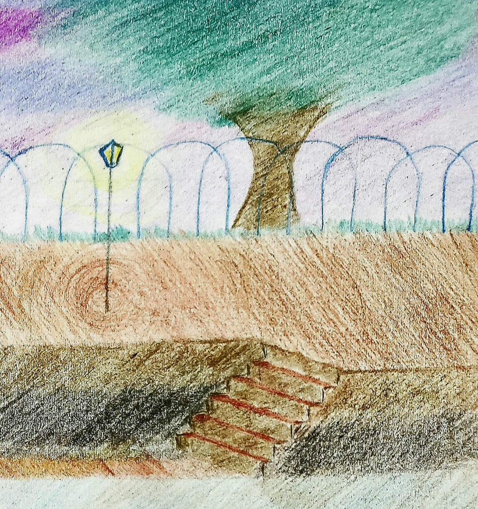

-

-
It is not the instant of time that is of any significance but rather its passing, which conveys a multitude of messages.
It's like music. An instant of music is not music at all.
-
3rd September 2020
When you know for sure that everyone around you is thinking it,
in the deepest corner of their minds,
but no one's saying anything because they're aware of the pain it might bring about ..
-
17th August 2020
Sometimes if you cannot speak, it is not because there are no words but because there are too many of them.
The thoughts pass too quickly for me to speak about them.
Why am I writing about it ?
It's because I'm hoping that my act of writing them down will help regulate their flow.
-
27th July 2020
Nothing is better than when feelings resonate.
There's no greater pleasure than sharing a feeling and getting it back amplified.
-
20th July 2020
Sometimes you have to take a leap because that's the only way you know it's better on the other side.
But what if it isn't ? Then you go through anyway because once you get through, you're stronger than you were before.
-
1st July 2020
If you know there's a voice, even silence speaks volumes.
-
30th June 2020
Her absence reminds me of the times when she's present.
Her presence shows me what I would be missing in her absence.
-
24th June 2020
I'm afraid of dying. But I'm more afraid of losing the ones I love.
So would you rather not love at all than live with the fear ?
-
23rd June 2020
When you don't realise time passing, you're already having a great moment.
-
21st June 2020
What you think is real is that which you believe to be true from what you know.
Your perception of reality changes everytime you learn something new.
A picture of reality is formed in your mind after the truth is filtered by your senses and emotions.
I therefore realised it was important to keep my emotions in check because I did not want to end up with a skewed version of the reality and act out of place.
-
5th June 2020
Anonymity is empowering.
Would you be able to do more if you were wearing a mask ?
If yes, then why aren't you already ?
Why can't you tell the truth otherwise ?
Are you afraid of being judged ?
It's your behaviour which you project when you think you're being noticed is most often what causes you to be noticed in the first place. How can others be comfortable with you if you're not comfortable with yourself ?
-
15th May 2020
All it takes for the world to be a better place is for someone to take time and just think.
-
7th May 2020
Letting someone get close to you means you're also willing to take responsibility for their feelings.
It's not a decision to be taken lightly.
Your love and pain are within you and can be controlled even if it's difficult.
How others feel is not upto you. So I realised it's very important that I project myself a certain way.
A way such that the feelings others develop for me are not their liability.
-
10th January 2020
My better self follows me always so he can point me in the right direction if I lose my way.
So I can only be as good as my imagination lets me be.
I need to purify my mind if I need my projection of my ideal self to in fact be ideal.
-
17th November 2019
Life began to fill the bubbles.
They rise,
leaving my insignificant self to go down.
There’s a deluge,
and then there’s a deluge of disorientation.
I’m lost in the dark,
wandering aimlessly.
A needle that knows not,
where to point.
But I’m conformed by the mother Earth,
because she perceives my polarity.
As I leave her,
she points me to you.
I now see a light.
The Ocean of love pulls me deeper,
and I feel the remnants of life leaving me.
But I cannot let them leave. Not yet.
I do not want to reach the light. Not yet.
I must hold on to that last modicum,
because I must know,
just how deep it is.
-
10th September 2019
The inability to think is not an excuse to judge people. Everyone has a story.
-
31st August 2019
I believe her to be true so I believe in her.
-
22nd May 2019
We are flawed. Like as a civilisation. Like as a life form.
"Why do we exist ?"
I can never answer this question.
Civilisation wouldn't work if we had an answer to everything.
Our curiosity is our flaw. No matter what we do, we
can always ask, "Why ?" Always. So this discomfort that we have
when we do not know something, and this curiosity, they were
imparted to us. They were imparted to us to drive us. I call it
our flaw because we can never have all the answers.
-
30th November 2018
Observing something changes it.
Using something degrades it.
Having a feeling corrupts it.
-
27th November 2018
There's no progress if you're comfortable.
-
10th June 2018
Each of us is just a statistic.
Two people meeting is a statistic.
Two people falling in love is a statistic.
Whether you live or die at any given moment in time is a statistic
It would be arrogant of us to think anything otherwise.
-
7th June 2018
Rain intensifies feelings.
It doesn't make me feel a certain way.
It amplifies the feeling I already have.
-
7th June 2018
A fraction of your heart is my whole.
-
5th June 2018
I hope I see that day long before I realise how long it's been.
-
3rd April 2018
I cannot feel every second of sleep that passes yet possess the knowledge that it has passed.
I'm waiting for tomorrow, so why do I still not want to fall asleep knowing that I won't realise the duration ?
Is sleep a gift ? Or do you feel better experiencing every passing second of your anticipation because such is the significance of the event tomorrow ?
-
1st April 2018
If only the words were coupled with the cadence of a voice ...
-
7th March 2018
I want the memory to be of a feeling which arises only once in a lifetime.